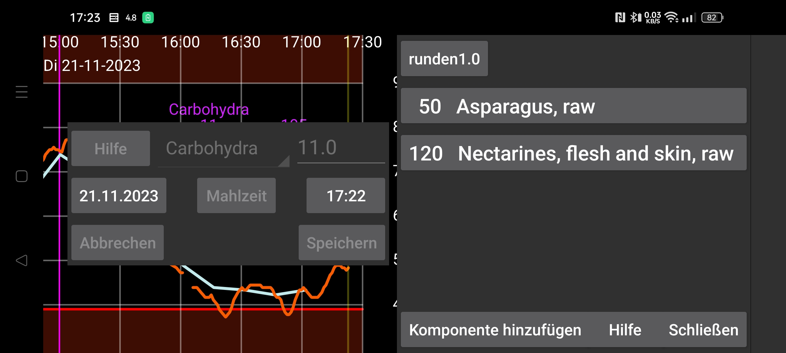
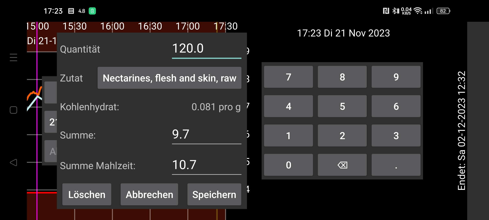
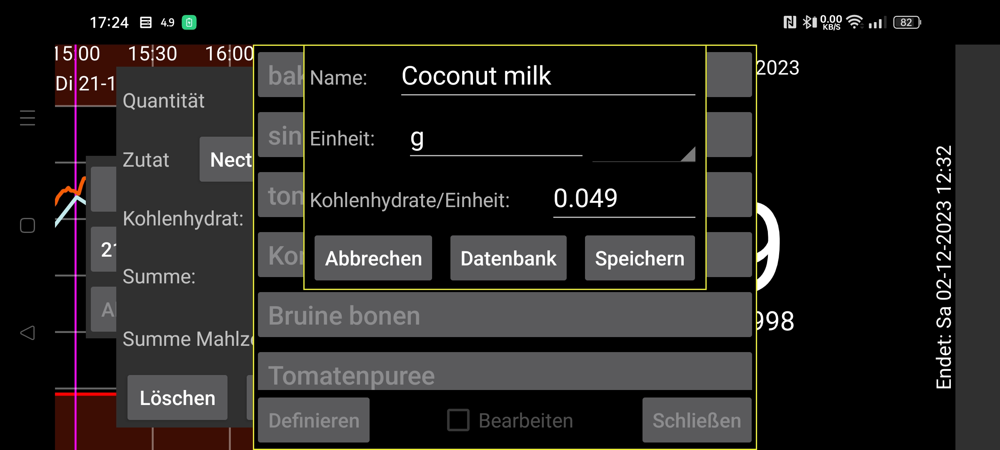

ar be de es fr hi it nl pl pt ru tr uk uz zh en
Geben Sie die Menge der Zutaten einer Mahlzeit an. Der Gesamtkohlenhydratgehalt wird dann berechnet. Es ist auch möglich, die Kohlenhydratmenge für die ganze Mahlzeit oder die Zutat anzugeben und das Programm ermittelt dann die benötigte Menge der Zutat. Drücken Sie auf „Komponente hinzufügen“, um der Mahlzeit eine Komponente hinzuzufügen. In dem aufgerufenen Dialog können Sie eine Zutat auswählen und ihre Quantität (oder Gesamtkohlenhydrate der Mahlzeit oder diese Komponente) angeben. Durch Drücken auf Auswählen oder die bereits angegebene Zutat gelangen Sie in eine Liste mit bereits definierten Zutaten. Sie können eine neue Zutat definieren, indem Sie dort auf Definieren drücken . Hier können Sie dann den Namen und den Kohlenhydratgehalt dieser Zutat in der angegebenen Einheit angeben. Sie können auch Datenbank drücken um in eine Lebensmittelzusammensetzungsdatenbank zu gelangen, wo Sie nach Zutaten suchen und die Zusammensetzung eines Lebensmittels sehen können, und durch Drücken von Auswählen können Sie den Namen dieses Lebensmittels und den Kohlenhydratgehalt in eine Inhaltsstoffdefinition einfügen.